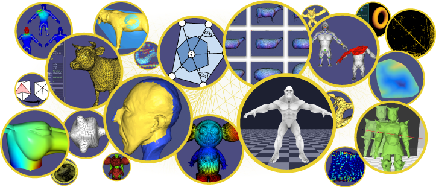
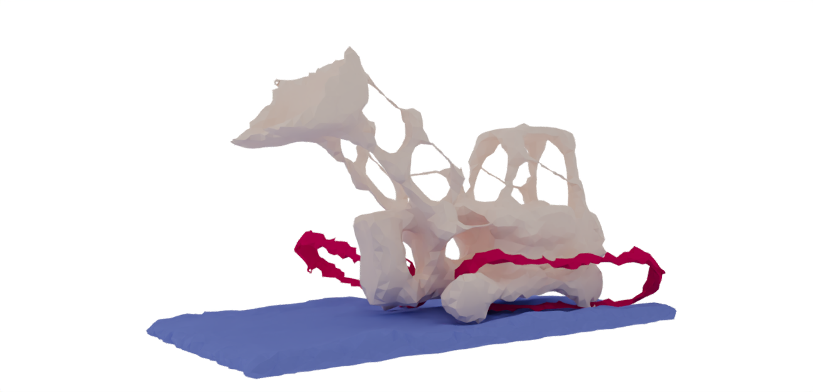
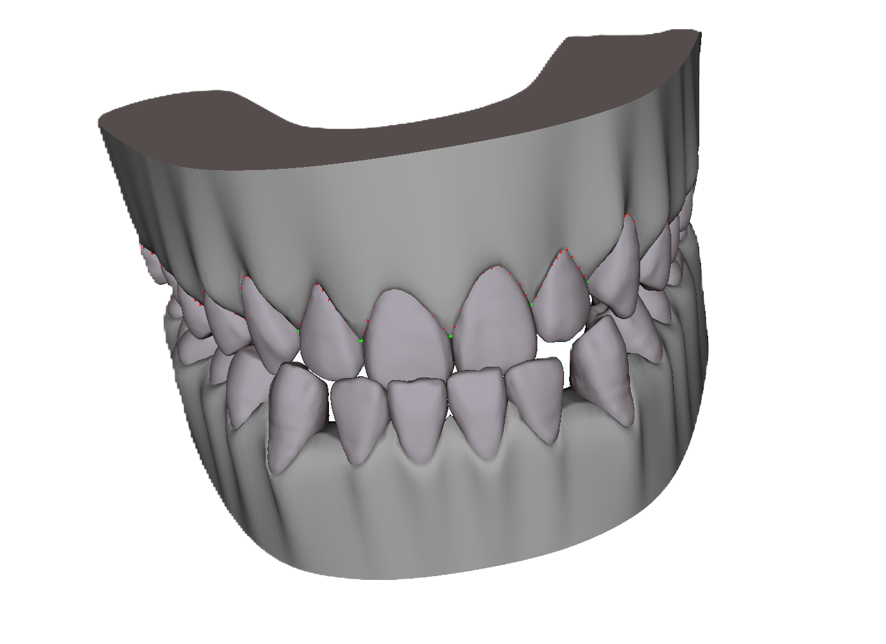
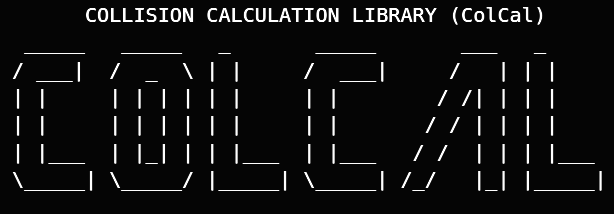

|
Zhouyuan Chen I'm a second-year Master student in the Geometric Computing Lab at New York University, supervised by Prof. Daniele Panozzo and Prof. Daniel Zint. Before that, I received my bachelor's degree from Zhejiang University of Technology, advised by Prof. Jiazhou Chen. My research interest is Computer Graphics. More specifically, I am working on Meshing and Elastic Simulation currently. |
{kind=link}
Publications & Preprints |

|
Shell Simulation with Hibrid Elements
Zhouyuan Chen, Daniel Zint, Teseo Schneider, Denis Zorin, Daniele Panozzo arXiv, 2024 project page / arXiv XXXX |
|
|
Image Simulator
Daniel Zint, Zhouyuan Chen, Teseo Schneider, Denis Zorin, Daniele Panozzo arXiv, 2024 project page / arXiv XXXX |
|
|
Topological Offset
Daniel Zint, Zhouyuan Chen, Yifei Zhu, Teseo Schneider, Denis Zorin, Daniele Panozzo arXiv, 2024 project page / arXiv XXXX |
Teaching |
|  |
Teaching Assistant
CSCI-GA.3033-018: Geometric Modelling at NYU, Spring 2024 |
|
Grader
CSCI-UA 101: Intro to Computer Science at NYU, Spring 2024 |
Software |
|  |
Image Simulator
3D Slicer extension software |
|  |
Hansfive Virtual Teeth
Part 1: Teeth Model Collision Visualization and Acceleration Part 2: Teeth Undercut Model Generation |
|  |
ColCal
A light-weight Broad-Phase Collision Detection Library |
Notes |
Geometry Processing |
Hack in std::map with
Eigen
Iterative Closest Point Algorithm(ICP) |
Simulation |
The Jacobian of SVD |
|
Website template can be found here. Credits to Jon Barron. |